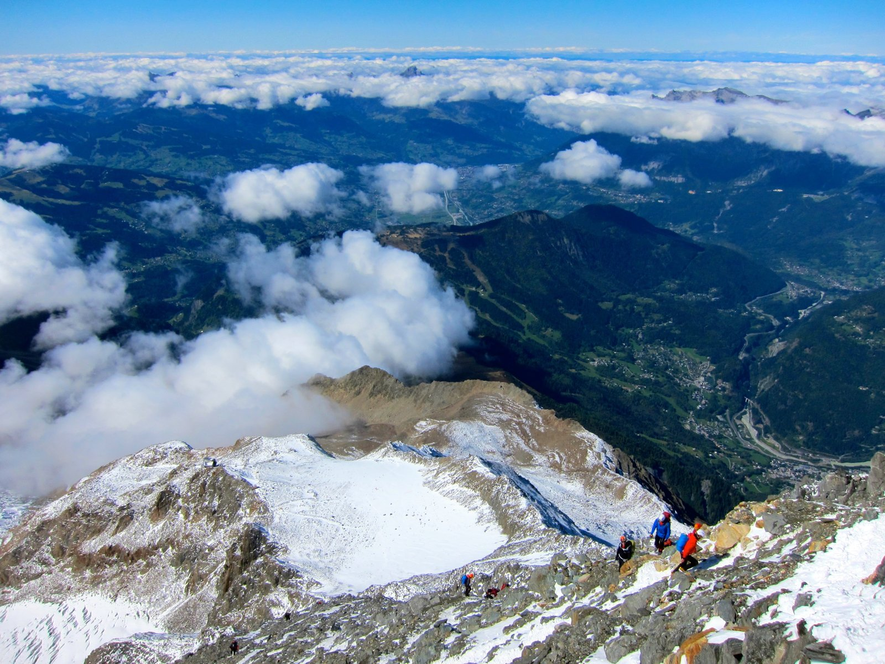
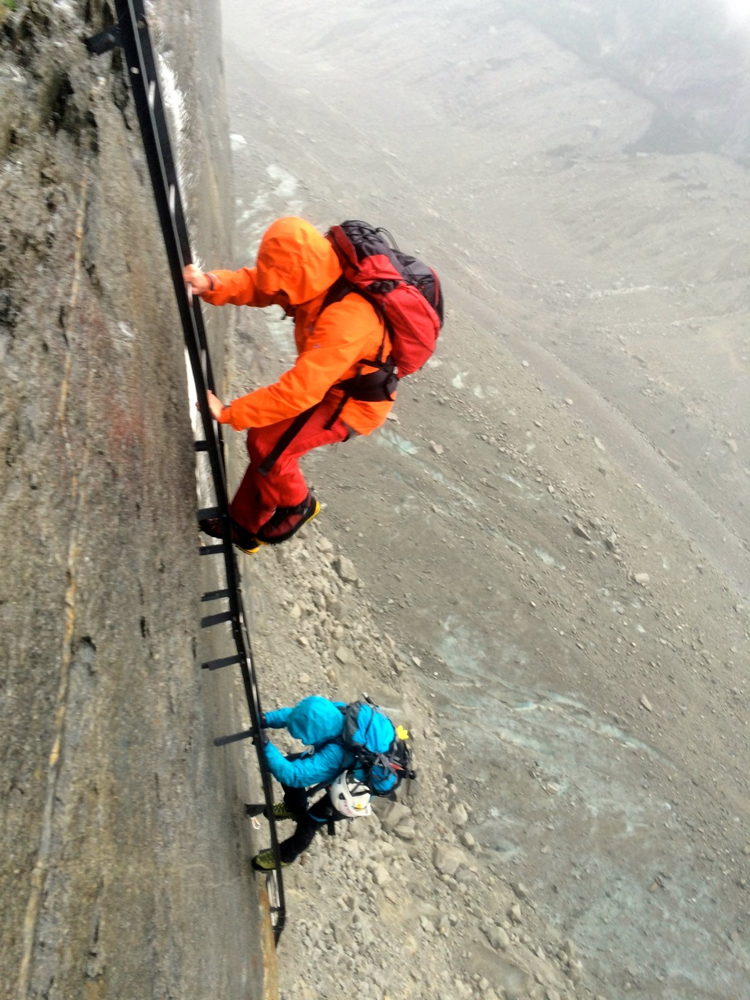
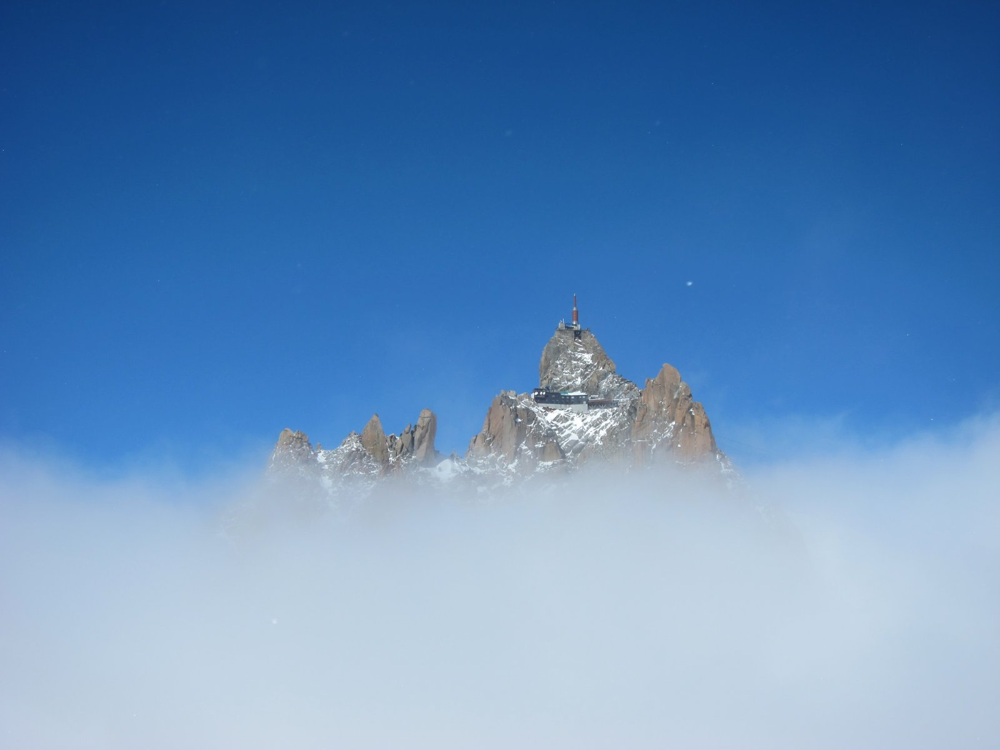

Camino de Santiago
France → Spain · 800 km on foot
I was 23, and I had almost no idea what I was doing. I'd signed up to walk the Camino Francés from Saint-Jean-Pied-de-Port to Santiago de Compostela with a pair of shoes that weren't quite broken in and a backpack that was slightly too heavy. The blisters arrived on day three.
By week two, I'd stopped counting kilometers. There's something about putting one foot in front of the other for eight hours a day that slowly empties your head. I met people from every corner of the world and talked for hours about things I'd never discussed with anyone. It was the least complicated I've felt as an adult.
I arrived in Santiago on a clear evening and sat in the square for a long time, not quite sure what to do next. This was the walk that started all of this.
Vietnam by Motorbike
Hanoi → Ho Chi Minh · Honda Win
A few weeks after finishing the Camino, I bought a beat-up Honda Win in Hanoi for around $200. The plan was to ride it south to Ho Chi Minh City. The bike broke down three times in the first week, and I spent one long afternoon by the side of a mountain road somewhere in the central highlands, trying to fix the chain with tools I didn't really know how to use, watching buffaloes cross a paddy field.
I loved every broken-down moment of it. Vietnam is the kind of place that keeps pulling you off the road into something unexpected, and that trip set the tone for a lot of what came after.
O'Henro: Shikoku Pilgrimage
Japan · 88 temples, 1,200 km
After Spain, I wanted to try the Japanese equivalent: the 88-temple pilgrimage around Shikoku island, known as the O'Henro. It's the route associated with the Buddhist monk Kobo Daishi, and pilgrims have been walking it for over a thousand years.
Walking it solo felt very different from the Camino. The Camino is social by design. The O'Henro is quieter, more internal, and the hospitality (the tradition of ossetai, where locals offer food and shelter to pilgrims) caught me completely off guard every single time. Japan already felt like a place I wanted to come back to.

Mont Blanc: 4,808m
France / Italy · Voie Normale
Mont Blanc was my introduction to proper alpinism: crampons, ice axe, rope, the whole thing. I'd done a few one-day winter routes before but nothing at this altitude or with this kind of exposure. We bivied at the Gouter hut, started at 2am, and made the summit just as the sun came up over the Alps.
It was cold and very bright and one of the most beautiful things I've ever seen. Also the first time I understood why people keep going back to the mountains once they've done this once. This was the pivot point from "trekker" to "climber."


Paragliding License
Alps · Solo license obtained
After a tandem flight in the Alps left me completely hooked, I went and did the full course. Paragliding is different from anything else I've done: you're reading wind, terrain, thermals, all at once, and the margin for error is much thinner than climbing. It's one of the more humbling things I've tried to learn.
I don't get to fly as regularly as I'd like, but earning the license felt important. It's the kind of discipline where complacency is dangerous, and I like having something that forces me to stay sharp.
Kitesurfing
Learning to ride
In a gap between big mountain objectives, I picked up kitesurfing. It's humbling in the best possible way. The kite is constantly trying to do something you don't want it to, and the water is very cold and very unforgiving when you get it wrong. But when it clicks, the feeling of riding upwind under a full kite is hard to match.
GR20: Corsica
Corsica · 180 km end to end
The GR20 is often called the hardest long-distance trail in Europe, and after the Camino and the O'Henro, I wanted to see what that actually meant. It meant scrambling, via ferrata chains, nights in mountain refuges, and terrain that doesn't let you switch off for very long.
The north section especially is relentlessly vertical. The granite here is a different color and texture from the Alps, and the whole island has this wild, slightly lawless feeling. I finished tired, sunburned, and very happy with how it had gone.
Matterhorn: Turned Back
Switzerland · Hörnli Ridge · 4,478m
I turned back on the Matterhorn, and I'm at peace with it. The conditions on the Hörnli Ridge that day were genuinely bad: ice where there shouldn't have been ice, slow parties above us, weather coming in earlier than forecast. Pushing on would have been the wrong call.
I've been on objectives that punish you for waiting and objectives that reward you for coming back. The Matterhorn is the kind of mountain that rewards patience. It's still on the list.
Serengeti Safari
Tanzania · Great Migration
After the Matterhorn, I came down to Tanzania for the Great Migration, the wildebeest crossing season in the Serengeti. It was a different kind of adventure: patient, slow-paced, built around the rhythms of the animals rather than any human goal. You sit and you wait and then something extraordinary happens in front of you. I found that surprisingly easy to love.
Daisetsuzan Traverse
Hokkaido, Japan · Asahidake to Tokachidake
Daisetsuzan is the largest national park in Japan, and the traverse from Asahidake to Tokachidake in October is one of the most otherworldly walks I've done. The autumn colors in Hokkaido are ridiculous: russet and gold and deep burgundy, with volcanic steam vents hissing out of the rock. The first night's frost covers everything in white by morning.
This one reminded me why Japan keeps pulling me back. There's wilderness here that most people from outside the country haven't discovered yet.
Traversée du Jura
France · Cross-country ski traverse
The Traversée du Jura is a long-distance cross-country ski route through the Jura mountains of eastern France. Eight days on Nordic skis, staying in mountain huts, moving through a landscape that felt completely untouched. The pace of cross-country skiing suits long days well. You can cover distance without feeling like you're rushing.
I'd never done anything this long on Nordic skis before. By day four my technique had improved considerably. By day six I'd stopped thinking about anything other than the next hut and whether the soup would be good.
Aconcagua: 6,962m
Argentina · Normal Route · Reached 6,500m
Aconcagua is the highest peak in the Western Hemisphere, and I spent 18 days on the Normal Route getting to know it. We made it to 6,500 meters, close enough to see the summit ridge clearly, before a combination of high winds, team fatigue, and deteriorating weather made the call for us.
This was my first experience above 6,000 meters, and the altitude is genuinely humbling. Your body just works differently up there. Everything takes more effort, sleep is elusive, and decisions that would be easy at sea level require real concentration. I learned a lot about expedition logistics, pacing, and what it actually feels like to spend weeks on a big mountain. Going back to finish the job.
Kilimanjaro: 5,895m
Tanzania · Machame Route
After the Aconcagua turn-back at 6,500m, Kilimanjaro felt like the right start to 2026, a summit to remind myself what that feels like. The Machame Route is beautiful, varied, and long enough to acclimatize properly. We summited on a clear morning with a view that stretched all the way to the curve of the earth.
Kilimanjaro is often described as a "walk-up," and technically that's true: no ropes, no crampons on the standard route. But 5,895 meters is 5,895 meters, and the altitude still demands respect. I felt strong from start to summit, which was a nice contrast to Aconcagua. Africa delivered.
Mt. Yotei Ski Descent
Hokkaido, Japan · Ski mountaineering
Yotei is an almost perfectly conical volcano in Hokkaido, and the ski mountaineering objective is a summit-to-base descent straight down the fall line. We skinned up in the early morning dark, reached the crater rim as the sun came up over the Niseko range, and skied down through deep, cold, Japanese powder.
Japan powder is its own category. The snow here is drier and lighter than anywhere I've skied in Europe or North America. The descent from Yotei's summit in these conditions was one of the best ski days I've had.
Mt. Fuji Summit & Ski
Japan · Ski mountaineering from summit
Skiing off the summit of Fuji in May, when the summer crowds haven't arrived and the snow is still in good shape, is one of those objectives that sounds wilder than it is. Fuji is technically not difficult: no glaciers, no crevasses, no technical climbing. But getting up and back safely in spring conditions, with the weather that Fuji generates, requires real care.
We summited in the early morning and skied 2,400 vertical meters back to the fifth station. Japan's most iconic shape, from the inside out. I've been walking past photos of this mountain for years of my life in this country. Skiing off the top felt like a proper way to say thank you to the place.
Japan End-to-End by Bike
Kagoshima → Tokyo · Unsupported
I've lived in Japan for a while now, and I wanted to see it at the pace of a bike: slow enough to stop anywhere, fast enough to cover the whole country. The route ran from Kagoshima in southern Kyushu all the way to Tokyo, roughly 1,500 kilometers of coastal roads, mountain passes, rice paddies, and small-town convenience stores.
Cycling Japan from south to north gave me a picture of the country I couldn't have gotten any other way. The landscape changes completely every few hundred kilometers. The food changes. The dialect changes. The pace of life changes. By the time I rolled into Tokyo on a clear afternoon, I felt like I actually understood the place I live in a little better. The best kind of ending.